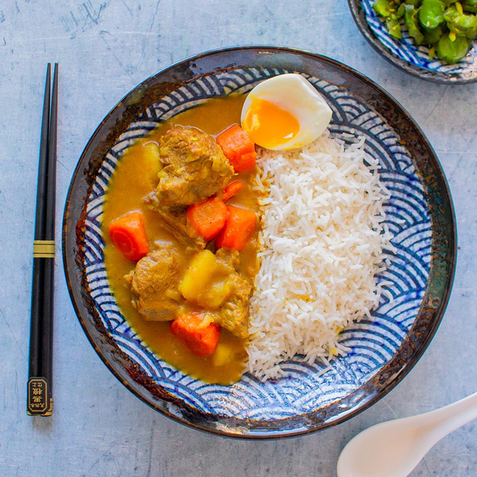

Kare Raisu

Description
Kare Raisu (Japanese Curry Rice) is a hearty, flavorful dish featuring tender chunks of meat and vegetables simmered in a rich, mildly spiced curry sauce, served over fluffy rice.
It's comforting, slightly sweet, and deliciously satisfying.
Ingredients : 4 Servings
- 500g chicken, beef, or pork (cubed)
- 2 large carrots (sliced)
- 2 potatoes (cubed)
- 1 onion (sliced)
- 2 cloves garlic (optional)
- 100g Japanese curry roux (store-bought blocks)
- 600g cooked white rice
- 3 cups water
- 1 tbsp oil (for cooking)
Steps
- Prepare white rice according to package instructions while you make the curry.
- In a large pot, heat the oil and brown the meat until cooked through.
- Add onions, carrots, and potatoes to the pot, and cook until slightly softened.
- Pour in the water, bring to a boil, then reduce the heat and simmer for about 15 minutes, or until vegetables are tender.
- Break the curry roux into pieces and stir into the pot. Simmer for 5 more minutes until the sauce thickens. Serve over rice!